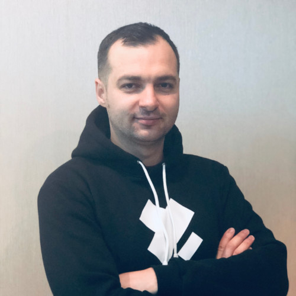
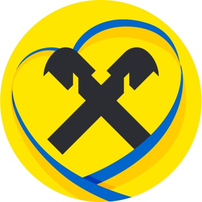

+380 93 010 5209 | serhii.dudar@protonmail.com | linkedin.com/in/serhii-dudar
Software engineer with over 13 years of experience creating solutions ranging from server applications to SDKs and client apps, with Java as my main focus in recent years. My expertise covers microservices architecture, high-load and event-driven systems (Kafka, Kafka Streams), reactive services, concurrency, performance optimization and software design. I follow Clean Architecture and solid engineering practices to keep code extensible, fast and easy to maintain. I have experience in technical leadership roles, owning project domains and driving architecture decisions through to delivery. Currently working on a payments platform for one of the largest banks in Ukraine. Strong background in C#/.NET, TypeScript/JavaScript, Bash, Python and Lua.

Project: Payments platform: domestic and international payment processing for one of the largest banks in Ukraine.
TECHNOLOGIES: Java 25, Spring Boot 4, Spring WebFlux, Project Reactor, PostgreSQL, DynamoDB, Redis, Apache Kafka, Kafka Streams, Apache Avro, Protobuf, AWS, Kubernetes, Helm, ArgoCD, Rego (OPA), OpenSearch, Grafana, Jaeger, JUnit 6, AssertJ, JMockit, Bash, Python, Lua
Project: 360 Pass: passenger transportation platform in the EU.
TECHNOLOGIES: Java 21, Spring Boot 3, GraalVM Native Image, PostgreSQL, Redis, Apache Kafka, Kafka Streams, Apache Avro, CloudEvents, Temporal, QueryDSL, Keycloak, Azure, Kubernetes, Helm, MinIO, Cucumber, JUnit 5, AssertJ
Project: City Plumbing: e-commerce platform of one of the UK's largest builders' merchants, supplying tens of thousands of trade products for delivery or collection.
TECHNOLOGIES: Java 11–21, Spring Boot, Project Reactor, RxJava, Netty, PostgreSQL, Redis, Elasticsearch, Apache Kafka, Kafka Streams, Kafka Connect, Apache Avro, JDBC, R2DBC, JDBI, jOOQ, GraphQL (DGS, Apollo Federation), Node.js, AWS, S3, Kubernetes, Helm, Vault, Keycloak, Jaeger, GitLab, Gradle, Cucumber, JUnit 5, AssertJ
Project: Natura ERP: ERP system for a large California cultivation and manufacturing company supplying licensed retailers and brands.
TECHNOLOGIES: Java 11, Spring Boot 2, Spring Cloud, Project Reactor, Netty, RSocket, Axon Framework 4, Axon Server, Apache Kafka, MongoDB, Quartz, OAuth2 / JWT, Google Cloud, Kubernetes, Maven, JUnit, Testcontainers, WireMock, REST Assured | React, React Native, Redux, TypeScript, RxJS, JavaFX
Project: Capna ERP: distributed system managing the product flow from factories to distributors, retailers and clients.
TECHNOLOGIES: Java 8, Spring Boot 2, Spring Cloud (Eureka, Ribbon, Circuit Breaker), Quartz, MySQL, RabbitMQ, GraphQL | React, Redux, TypeScript, RxJS
Project: Bank Connect: aggregation of a user's accounts across multiple banks (American Express, CartaChiara, CartaAziende and others) into one system for data processing and analysis.
TECHNOLOGIES: Java 8, Spring Boot, MapStruct, Apache Commons, JUnit
Project: Elitconnect: property market management system in the USA.
TECHNOLOGIES: C# 7, .NET Framework 4.7, .NET Core, Mono, Rx.NET, Nancy, MySQL, MongoDB, WebSockets, AutoMapper, NLog, NUnit, Moq | Angular 6, Redux, TypeScript, RxJS, Karma, Jasmine
Project: Gamesys: one of the UK's largest online gaming platforms.
TECHNOLOGIES: Java 8, Spring Framework 5, Apache Camel, Apache Kafka, Docker, Kubernetes, JMeter, JProfiler, SonarQube, JUnit, REST Assured, WireMock
Project: Bwin: one of the world's largest sports betting platforms.
TECHNOLOGIES: C# 7, ASP.NET MVC 5, Web API 2, OWIN, Sitecore, Log4Net, NUnit | TypeScript, AngularJS, Angular 4, Webpack, Karma, Jasmine, Protractor, Selenium
Project: Indasoft TSDB: distributed high-load system for storing and processing large volumes of industrial time-series data.
TECHNOLOGIES: C#, .NET Framework 4.6, Web API 2, Java 8, Spring Framework, Apache Cassandra, KairosDB, Redis, RabbitMQ, Protobuf, SignalR, OPC, SQL Server, Entity Framework 6, WPF
Other projects: 10 web, CRM and internal systems, including a large UK job-search portal (MyWorkSearch), Microsoft Dynamics CRM integrations, a WCF service generator, document-lifecycle and time-tracking systems.
Technologies: C#, ASP.NET MVC / Web Forms, Web API, WCF, Entity Framework, NHibernate, MS SQL Server, Umbraco | JavaScript, Angular, Knockout, jQuery, Kendo UI
Serhii Dudar — serhii.dudar@protonmail.com — +380 93 010 5209 — linkedin.com/in/serhii-dudar